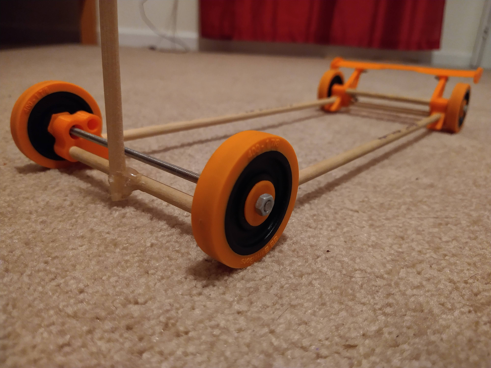
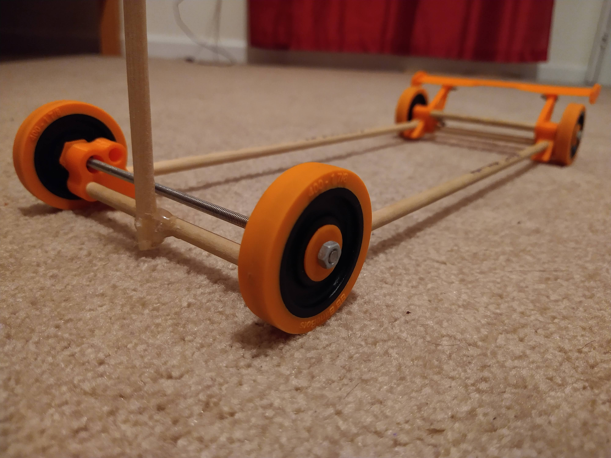

Gravity Vehicle
One of the events that I participated in during my senior year in Science Olympiad was Gravity Vehicle. The goal was to build a vehicle that would ride down a 2 meter tall ramp and reach a target distance in as little time as possible. How close the vehicle is to the target point and the how quickly the vehicle reached the target both factor into the score.
The vehicle uses a special wingnut braking mechanism to stop at a certain distance. A threaded rod is used as an axle, and as the threaded rod axle spins as the car moves forward, a wingnut rides down it and eventually hits a wall and locks up the wheels.
Pictures
 
